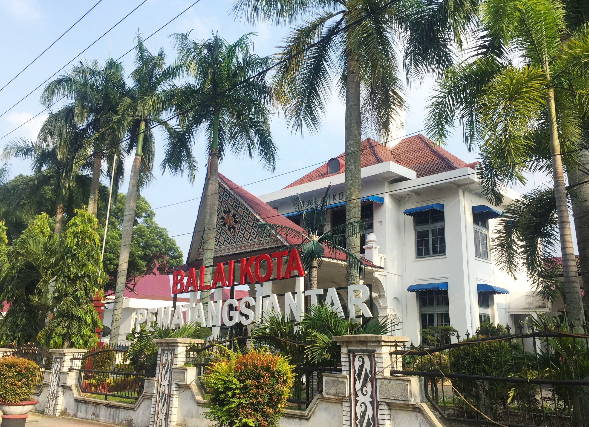
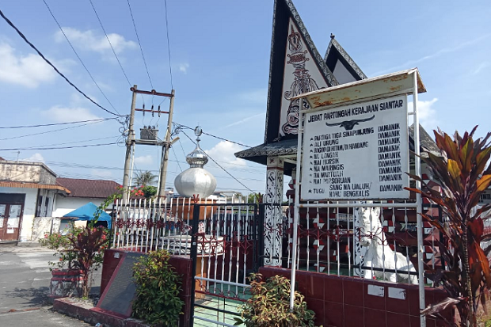
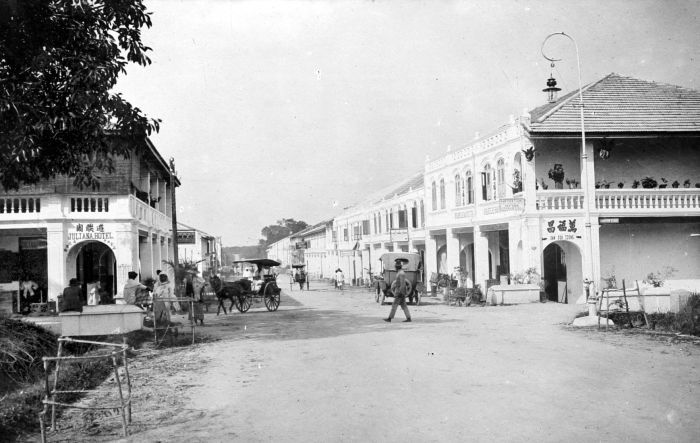
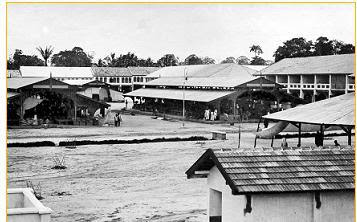
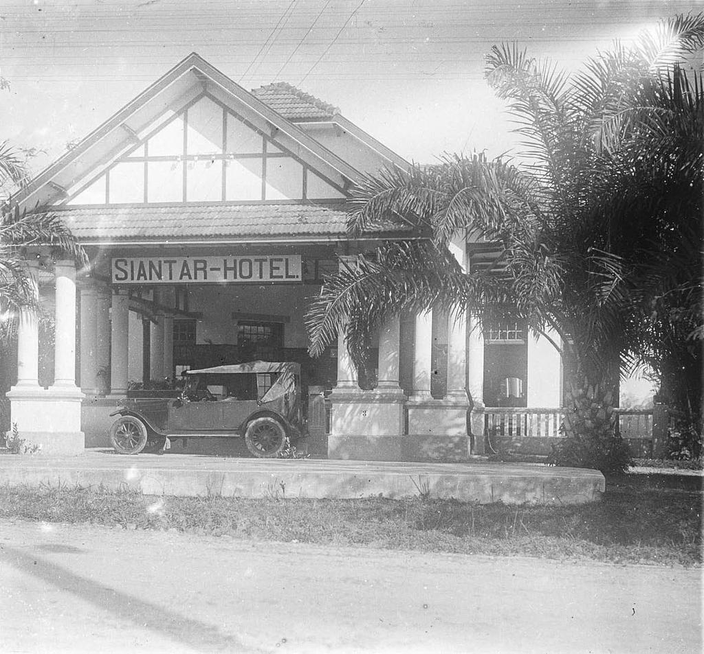
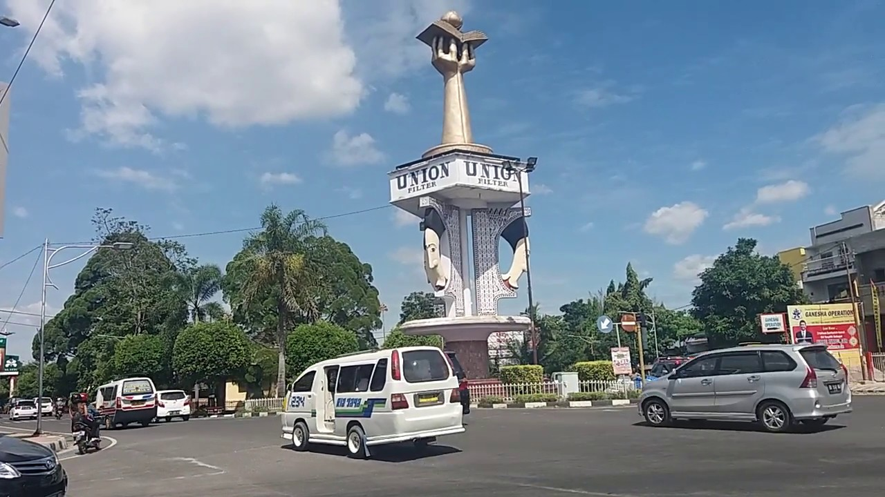
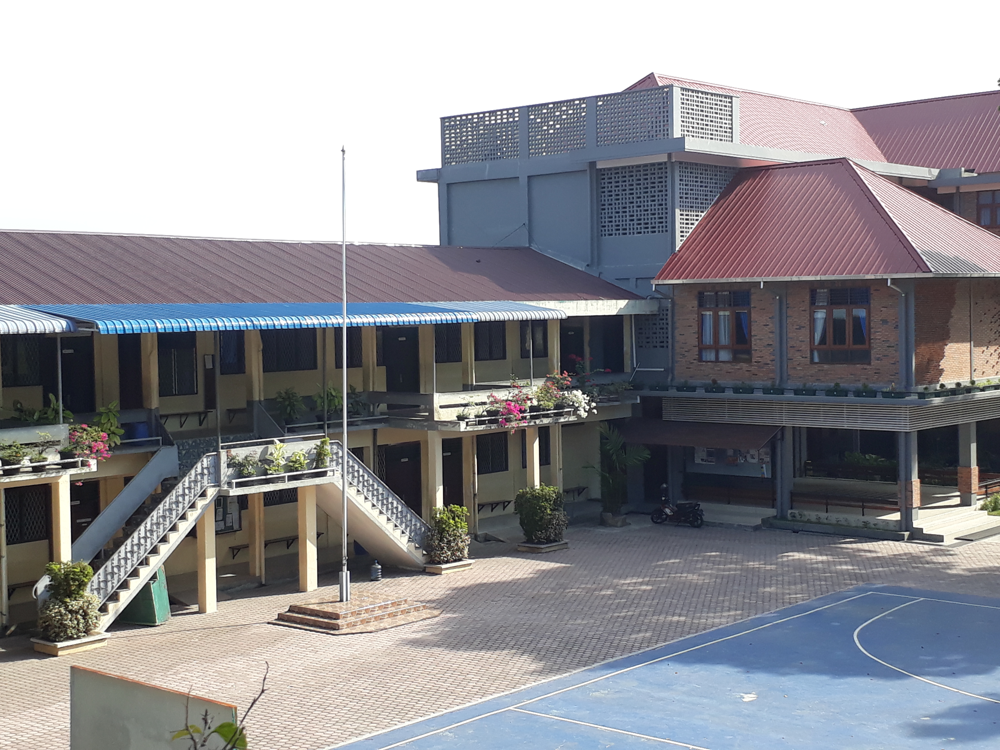
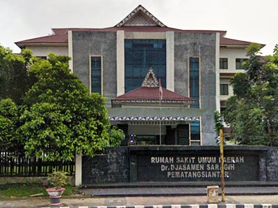
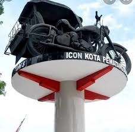
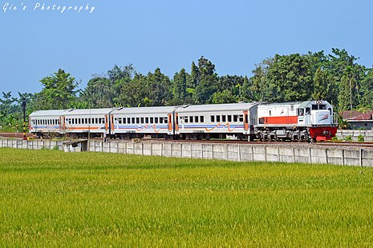

Bio

Kota Pematangsiantar (lebih dikenal oleh masyarakat setempat dengan Kota Siantar saja) adalah salah satu kota di provinsi Sumatera Utara, Indonesia. Karena letak Pematangsiantar yang strategis, kota ini dilalui oleh jalan Raya Lintas Sumatera. Kota ini memiliki luas wilayah 79,97 km2 dan berpenduduk sebanyak 268.254 jiwa (2001), dimana laki-laki berjumlah 132.615 jiwa dan perempuan 135.639 jiwa.
Kota Pematangsiantar yang hanya berjarak 128 km dari Medan dan 50km dari Parapat sering menjadi kota perlintasan bagi wisatawan yang hendak ke Danau Toba. Sebagai kota penunjang pariwisata di daerah sekitarnya, kota ini memiliki 8 hotel berbintang, 10 hotel melati dan 268 restoran. Di kota ini masih banyak terdapat sepeda motor The Birminghan Small ArmsbCompany (BSA) kapasitas 500 cc buatan Inggris, model lama sebagai becak bermesin yang menimbulkan bunyi yang keras.
Wakil Presiden Republik Indonesia yang ke-3 Adam Malik, lahir di kota ini pada 22 Juli 1917. Kota ini pernah menerima Piala Adipura pada tahun 1993 atas kebersihan dan kelestarian lingkungan kotanya. Sementara itu, karena ketertiban pengaturan lalu lintasnya, kota ini pun meraih penghargaan Piala Wahana Tata Nugraha pada tahun 1996.
Sektor Industri yang menjadi tulang punggung perekonomian kota yang terletak di tengah-tengah Kabupaten Simalungun ini adalah industri besar dan sedang. Dari seluruh total kegiatan ekonomi, pada tahun 2000 kota ini mencapai Rp 1,69 triliun, pangsa pasar industri mencapai 38,18% atau Rp 646 miliar. Sektor perdagangan, hotel dan restoran menyusul di urutan kedua, dengan sumbangan 22,77% atau Rp 385 miliar.
Motto dari kota ini adalah Sapangambei Manoktok Hitei yang berasal dari Bahasa Simalungun yang memiliki arti Saling bergotong-royong demi mencapai tujuan yang mulia.
Sejarah
Masa Kerajaan Pematangsiantar

Sebelum proklamasi Kemerdekaan Republik Indonesia, Pematangsiantar merupakan daerah kerajaan. Pematangsiantar yang berkedudukan di Pulau Holing dan raja terakhir dari dinasti ini adalah keturunan marga Damanik yaitu Tuan Sang Nawaluh Damanik yang memegang kekuasaan sebagai raja tahun 1906.
Di sekitar Pulau Holing kemudian berkembang menjadi perkampungan tempat tinggal penduduk diantaranya Kampung Suhi Haluan, Siantar Bayu, Suhi Kahean, Pantoan, Suhi Bah Bosar, dan Tomuan. Daerah-daerah tersebut kemudian menjadi daerah hukum Kota Pematangsiantar yaitu:
- Pulau Holing menjadi Kampung Pematang
- Siantar Bayu menjadi Kampung Pusat Kota
- Suhi Kahean menjadi Kampung Sipinggol-pinggol, Kampung Melayu, Martoba, Sukadame, dan Bane
- Suhi Bah Bosar menjadi Kampung Kristen, Karo, Tomuan, Pantoan, Toba dan Martimbang.
Masa Pendudukan Belanda

Setelah Belanda memasuki daerah Sumatera Utara, daerah Simalungun menjadi daerah kekuasaan Belanda sehingga pada tahun 1907 berakhirlah kekuasaan raja-raja. Kontroleur Belanda yang semula berkedudukan di Perdagangan, pada tahun 1907 dipindahkan ke Pematangsiantar. Sejak itu, Pematangsiantar berkembang menjadi daerah yang banyak dikunjungi pendatang baru, Bangsa Cina mendiami kawasan Timbang Galung dan Kampung Melayu.
Pada tahun 1910 didirikan Badan Persiapan Kota Pematangsiantar. Kemudian pada tanggal 1 Juli 1917 berdasarkan Stad Blad No. 285 Pematangsiantar berubah menjadi Gemente yang mempunyai otonomi sendiri. Sejak Januari 1939 berdasarkan Stad Blad No. 717 berubah menjadi Gemente yang mempunyai Dewan.
Masa Pendudukan Jepang

Pada zaman Jepang berubah menjadi Siantar State dan Dewan dihapus. Setelah Proklamasi kemerdekaan, Pematangsiantar kembali menjadi Daerah Otonomi. Berdasarkan UU No. 22/1948 Status Gemente menjadi Kota Kabupaten Simalungun dan Wali Kota dirangkap oleh Bupati Simalungun sampai tahun 1957.
Masa Kemerdekaan Indonesia

Berdasarkan UU No. 1/1957 berubah menjadi Kota Praja Penuh dan dengan keluarnya UU No. 18/1965 berubah menjadi Kota, dan dengan keluarnya UU No. 5/1974 tentang pokok-pokok pemerintahan di daerah berubah menjadi Kota Daerah Tingkat II Pematangsiantar sampai sekarang.
Berdasarkan Peraturan Pemerintah No. 35 tahun 1981 Kota Daerah Tingkat II Pematangsiantar terbagi atas empat wilayah kecamatan yang terdiri atas 29 Desa/Kelurahan dengan luas wilayah 12,48 km2 yang peresmiannya dilaksanakan oleh Gubernur Sumatera Utara pada tanggal 17 Maret 1982. Kecamatan-kecamatan tersebut yaitu:
- Kecamatan Siantar Barat
- Kecamatan Siantar Timur
- Kecamatan Siantar Utara
- Kecamatan Siantar Selatan
Geografis

Kota Pematangsiantar terletak pada garis 2° 53’ 20”–3° 01’ 00” Lintang Utara dan 99° 1’00”–99° 6’ 35” Bujur Timur, berada di tengah–tengah wilayah Kabupaten Simalungun.
Luas daratan Kota Pematangsiantar adalah 79,971 Km² terletak 400-500 meter di atas permukaan laut. Berdasarkan luas wilayah menurut kecamatan, kecamatan yang terluas adalah kecamatan Siantar Sitalasari dengan luas wilayah 22,723 km² atau sama dengan 28,41% dari total luas wilayah Kota Pematangsiantar.
Infrastruktur
Pendidikan

Di Kota Pematangsiantar terdapat Sekolah Tinggi Theologia HKBP, yang kampusnya terletak di Jalan Sangnawaluh No. 6. Juga terdapat Universitas Simalungun atau disingkat USI, Universitas HKBP Nommensen yang sering disebut Nommensen dan Sekolah Tinggi Agama Islam (STAI) UISU Pematangsiantar. Selain itu terdapat juga beberapa Perguruan Tinggi lainnya yaitu AMIK Multicom, STIKOM Tunas Bangsa, dan AMIK Parbina Nusantara berdiri.
Terdapat juga sekolah-sekolah swasta besar seperti Bintang Timur, Methodist, Sultan Agung, Kalam Kudus, SMA Kampus Nommensen, Taman Asuhan, Taman Siswa, SMK Parbina Nusantara, SMA Budi Mulia, SMA Bintang Timur, dan SMA Seminari, Surya atau sering disebut dengan Surya Komputer, SMA-SMK PELITA.
Sekolah-sekolah swasta tersebut telah menghasilkan murid-murid berprestasi yang bertanding di ajang-ajang olahraga nasional. Secara total, Pematangsiantar memiliki 160 Sekolah Dasar, 43 Sekolah Lanjutan Tingkat Pertama, 28 Sekolah Menengah Umum, dan 7 Universitas/Akademi.
Di kota ini juga terdapat Museum Simalungun yang berisi koleksi peninggalan sejarah dan budaya Simalungun. Museum ini dikelola oleh Yayasan Museum Simalungun, dan berlokasi di Jalan Jenderal Sudirman, di antara kantor Polres Siantar dan GKPS Sudirman.
Kesehatan

Terdapat 7 buah Rumah Sakit dari berbagai kategori di Pematangsiantar dengan kapasitas 597 tempat tidur. Salah satu yang terbesar adalah Rumah Sakit Umum Daerah dr. Djasamen Saragih, dengan kapasitas 220 tempat tidur, yang dilayani oleh 7 dokter umum, 3 dokter gigi, dan 25 dokter spesialis.
Rumah sakit di atas dibantu oleh 17 Pusat Kesehatan Masyarakat (Puskesmas), dan 10 Puskesmas pembantu. Selain itu terdapat 17 Balai Pengobatan Umum (BPU) dan 235 Pos Pelayanan Terpadu (Pos Yandu).
Transportasi

Kota Pematangsiantar dapat diakses melalui 2 sarana transport darat, Bus dan Kereta Api. Secara umum, transportasi dalam kota dilayani oleh sarana Angkutan Kota dan Becak Motor. Terminal Bus terbesar di Pematangsiantar terdapat di Terminal Parluasan, yang merupakan titik transit bagi hampir seluruh Angkutan Kota dan luar Kota (AKDP) maupun Antar Provinsi (AKAP). Bus-bus yang melayani rute dari dan ke Pematangsiantar terdapat banyak pilihan antara lain adalah Antar Lintas Sumatera (ALS), PMH, Indah Transport (INTRA), Sentosa, PMM, Sejahtera, Eldivo, Tiomaz Executive. Bus-bus tersebut melayani rute antara lain ke Medan, Brastagi, Pekanbaru, Padang, Tarutung, Parapat.
Direncanakan beroperasi pada tahun 2022 Jalan Tol Kuala Tanjung - Tebing Tinggi - Parapat oleh PT. Hutama Marga Waskita (HMW) dengan panjang 143,23 km dan terbagi dalam 6 seksi yang merupakan Jalan Tol Trans Sumatera kelanjutan dari Jalan Tol Medan - Kualanamu - Tebing Tinggi. Jalan tol ini akan melewati Kota ini dan akan memperpendek jarak tempuh dari dan ke Kota Pematangsiantar maupun daerah-daerah disekitarnya.

Untuk sarana transportasi Kereta Api dapat diakses menggunakan Siantar Express dengan relasi Stasiun Medan ke Stasiun Siantar (PP). Stasiun Siantar terletak dijalan Kartini No. 13 Kelurahan Proklamasi Kecamatan Siantar Barat, Pematangsiantar